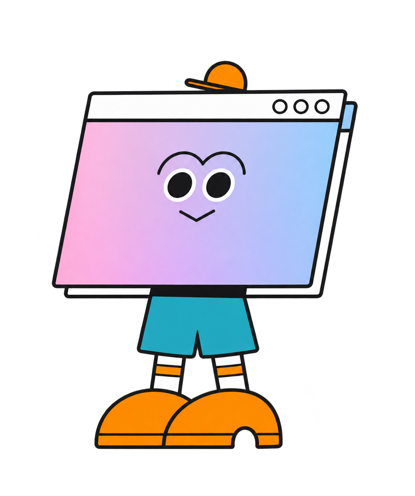

01Joins the call, understands Hinglish
02Draws a live whiteboard in the call
03Wilco’s avatar presents and speaks
04Spoken recap · Gnani Timbre in the app
05Debrief, linked to the moment it was said
06Tasks with owners and due dates
07Ask your meetings, with cited sources
08Talk to Wilco in 11 Indian languages
Real app · live demo workspace
09
Voice → Jira
“Create a Jira ticket: fix the webhook retry bug, assign Vedant”
10
Spoken stand-ups and pre-call briefs
Each person’s updates and blockers, read out
11
Live call translation
Running translations in the call chat
12
Hear the original quote
Play the exact moment a decision was made
13
An AI stand-in, in your own voice
Opt-in Gnani voice cloning · always says it’s AI
14
Phone calls and WhatsApp voice notes
Upload noisy audio, get the recap read back
15
Delivery Radar
Follow-ups, urgent work and decisions in one view
16 · Already works with your stack
Google Meet
Joins, speaks, presents
Microsoft Teams
Joins by meeting link
Google Calendar
Auto-join and briefs
Jira Cloud
Two-way task sync
WhatsApp
Voice-note recaps
Google Sheets
Export via extension

Wilco
Your meeting. Still useful.
34-58-54-115.sslip.io · Built on Gnani Prisma + Timbre
#GnaniAI #GreatIndianAIInternshipChallenge · Voices in this cut: Gemini TTS stand-ins